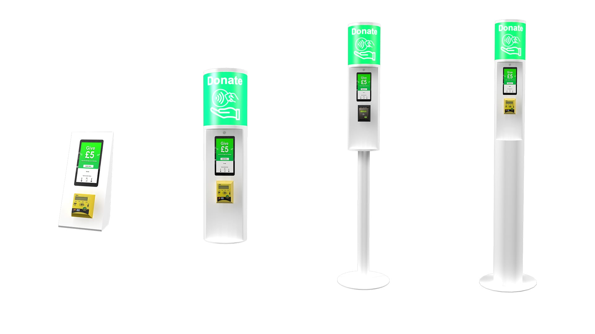
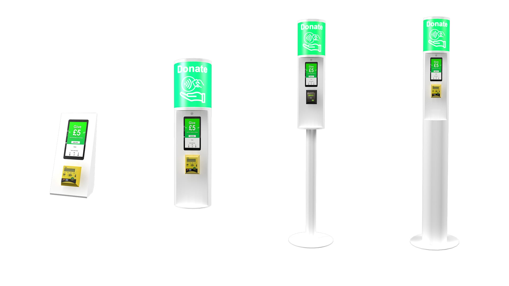

About
"Tubular Systems Ltd" operate and manufacture self-service kiosks that are located in England, Turkey and Asia. The self-service kiosks developed include SIM/Gift card dispensing and a contactless or debit/credit card fundraising system.
Design
During the development stages for the self-service kiosks, I assisted in creating 3D mock-ups of the Tubular kiosks to assist with the engineering and manufacturing of the final product. I also designed the signage that appears on the lightbox and designed the UI and UX of the touchscreen panel.
 

Graphic Design
I also created the company logos, branding, social media channels, trade-show banners and any other form of artwork medium that was needed.
Photography
I also went on site to the locations in Shoreditch and Oxford Circus to take photographs for the website, merchandising and social media channels.

Development
Mobile Responsive Design, Wordpress
Tubular Systems Ltd's website uses the CMS Wordpress. This website uses an existing created theme which I have used to create and style this site. I have also managed and maintained every area of this website.
Conclusion
I have helped Tubular Systems Ltd from marketing, product design, website design, and website development. I have assisted with branding and social media management including the customer support available through the live-chat on the website.